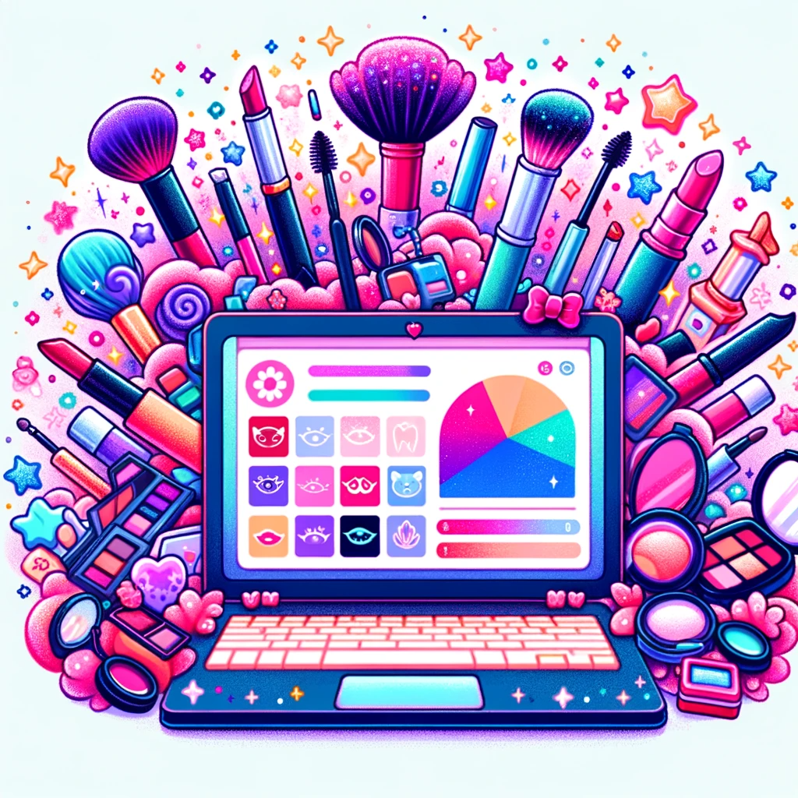

The Exploratory Data Analysis (EDA) of the MakeupAddiction subreddit offers a comprehensive view into the dynamics of this online community. It reveals key patterns in user engagement and content trends, providing insights into average user interactions, the influence of top content creators, and demographic engagement differences. This understanding is crucial for effective community engagement, content creation, and marketing strategies.
The analysis also uncovers temporal patterns and peak engagement times, guiding content timing for maximum impact. It delves into the community's evolving interests and norms, highlighted by the study of top tags and comment controversiality. This aspect is particularly valuable for adapting to changing preferences and maintaining relevance within the community.
Additionally, the EDA's segmentation of data through new and dummy variables offers a granular look at content types and creator behaviors. The integration of external data like Reddit Karma and Google Trends enriches the analysis, providing a broader perspective on creator credibility and market trends. This multifaceted approach provides strategic insights for marketers, content strategists, and community managers, making it a valuable tool for informed decision-making in digital and beauty marketing.
Data Cleaning
Over a span of three years, from 2021 to 2023, our data collection encompassed the "MakeupAddiction" subreddit, yielding an extensive dataset. This dataset comprises 1,053,280 comments from 193,808 unique authors and 95,932 submissions posted by 37,635 distinct authors. This rich compilation of user-generated content provides a comprehensive foundation for our analysis, reflecting the vibrant activity and diverse participation within this online community.
Please find the refined schema for the "MakeupAddiction" subreddit submissions detailed below:
Please find the refined schema for the "MakeupAddiction" subreddit Comments detailed below:
In our analysis of the datasets from the "MakeupAddiction" subreddit, we first undertake a thorough assessment of missing values. Given the extensive number of columns in the submissions dataset, we streamline our focus by pre-selecting columns pertinent to our forthcoming analysis. Furthermore, we conduct a rigorous examination for potential data corruption. This involves identifying and scrutinizing any rows with anomalies that could signify data integrity issues, such as irregular patterns or incomplete records.
Upon inspecting the comments dataset for missing values, we discovered that the columns `author_cakeday`, `author_flair_css_class`, and `author_flair_text` exhibit a missing value rate exceeding 99%. This high percentage of absence indicates that these columns hold minimal informational value. Consequently, to streamline our dataset and enhance analytical efficiency, we have decided to omit these columns from the comments dataset.
While inspecting the submissions dataset for missing values, we discorvered that the columns `thumbnail_height`,`thumbnail_width`,`Media`,`post_hint`,`promoted`,`promoted_by`,`promoted_display_name`,
`promoted_url`,`original_link`,`link_flair_text`,`embed_type`,`domain_override`,`author_flair_text`,`brand_safe`,
`crosspost_parent`,`crosspost_parent_list`,`disable_comments`,`distinguished` and `domain` exhibit a missing value rate exceeding 99%. This high percentage of absence indicates that these columns hold minimal informational value. Consequently, to streamline our dataset and enhance analytical efficiency, we have decided to omit these columns from the submissions dataset.
Upon examining the text content of submissions and comments, it was discovered that there are more than 372,000 instances where comment bodies contain zero characters. Conversely, submission titles are consistently populated, with none having zero characters. However, there are more than 78,000 cases where the 'selftext' field—typically containing the main body of a submission—is empty, showing zero characters in length.
Analysis Report
1. Exploring the MakeupAddiction Subreddit through Data
Embark on an analytical exploration of the MakeupAddiction subreddit through three meticulously crafted summary tables. These tables offer a comprehensive narrative, distilling the essence of a dynamic community into quantifiable insights. Each table is a carefully constructed compilation, not merely aggregating data but encapsulating the richness of dialogue, the exchange of knowledge, and the communal engagement within this digital ecosystem. They represent a convergence of data-driven storytelling and the shared passion of beauty aficionados, providing an informed perspective on the subreddit's vibrant discourse.
Statistics table for submission dataset in MakeupAddiction Subreddit
Table 1 reveal moderate user interaction with an average of 10.61 comments per post, low crossposting activity, and a wide variance in post scores, indicating a mix of common and highly popular posts. Most posts receive few accolades, as evidenced by the near-zero average for gilding, and thumbnail dimensions are fairly standardized, suggesting uniformity in post presentation. This data underscores the typical user engagement and content patterns within a subreddit.
List Top 10 Creators in MakeupAddiction Subreddit
Table 2 summarizes performance metrics for top contributors on the MakeupAddiction subreddit, highlighting diverse content strategies. Key observations include "Veeezy's" high engagement rates, "DominoRepulsa" and "The_Alchemyst's" impactful posts that garner significant upvotes, and "RalucaMakeup's" rapid rise in influence. The data illustrates that both frequent posting and high-quality content are effective for community engagement.
Posting Karma on Reddit quantifies the community's endorsement of a user's posts through upvotes, serving as an indicator of content popularity and perceived quality. We include Posting Karma in our analysis to gauge the influence of top contributors within the MakeupAddiction subreddit, as it highlights not only active participation but also the effectiveness of a creator's content in engaging the community, thereby shaping the subreddit's engagement dynamics and content quality.
We performed statistical tests to analyze engagement differences between adult and youth posts on a subreddit, where the null hypothesis posited no difference in engagement levels. Table 3 indicated adults had lower engagement, with an average of 4.67 comments and 33.39 scores, while youth had higher engagement, averaging 10.69 comments and 98.26 scores. Despite the difference, both demographics showed variability, as evidenced by high standard deviations and a range of interactions, with some posts reaching up to 821 comments for adults and 15,444 for youth, and scores peaking at 11,110 for adults and 49,187 for youth. Our t-test resulted in T-statistics of -7.29 for comments and -6.13 for scores, and the Mann-Whitney U Test showed U-statistics of 40,454,428 for comments and 37,070,713.5 for scores, with P-values far below the 0.05 threshold. These statistically significant results led us to reject the null hypothesis, confirming the observed differences in engagement between adult and youth submissions and suggesting more active engagement and possibly a broader audience among the youth.
2. Five Vibrant Visualizations from the MakeupAddiction Subreddit
Investigate whether the controversiality of comments attracts more views and engagement.
Fig 1 displays the distribution of comments on the MakeupAddiction subreddit, distinguishing between non-controversial (light blue) and controversial (light coral) ones. The chart reveals that non-controversial comments exceed one million, dominating the discourse, while controversial comments number just over 10,000, highlighting their minimal presence in the community's interactions.
The peak hours and seasonality trends and potential festival or holiday impacts for makeup-related content
Fig 2 displays the hourly post volume and average score trends on the MakeupAddiction subreddit. The data indicates that post volume maintains a moderate level during morning hours, experiences a downturn in the early hours, and subsequently exhibits an ascending trajectory, culminating in a peak during the evening. Concurrently, the average score, indicative of user engagement, reaches its zenith at approximately 13:00-14:00. This peak in average score suggests a window of heightened interaction. As the day progresses into evening hours, both the post volume and average score witness a substantial increase, denoting a period of intensified activity and engagement within the subreddit community.
The daily post count (depicted by the blue line) on the MakeupAddiction subreddit, Fig 3 demonstrates notable fluctuations, with episodic spikes that may correspond with specific events or seasonal trends, such as increased activity around Halloween or a surge during the festive period in December. These variations suggest that user participation is influenced by external events which inspire sharing related content. The average score per post, illustrated by the orange line, maintains a relatively stable pattern, with minimal variation, except for a striking upsurge around January 2023. This anomaly indicates a day of exceptional engagement, where the content, albeit less in quantity, resonated strongly with the community, garnering substantial upvotes.
In the broader view, the data lacks a clear progressive trend or seasonality over the two-year span, with both metrics experiencing regular fluctuations. This observation implies that the community’s interaction and content appreciation are dynamic and do not adhere to a predictable pattern.While the hourly analysis previously hinted at an inverse correlation between post volume and average score, the daily data does not consistently support this relationship, underscoring the complexity of user engagement and content valuation on a day-to-day basis.
Find the top 10 tags in MakeupAddiction Subreddits
The bar chart from the MakeupAddiction subreddit shows changing trends over three years. In 2021, ‘face of the day’ was highly popular, indicating a focus on showcasing daily makeup looks. This interest sharply declines over the next two years. The ‘question’ tag gains prominence in 2022 and 2023, suggesting a shift towards seeking advice and knowledge sharing within the community. ‘Discussion’ remains stable initially but decreases in 2023, indicating possible changes in community engagement. ‘Haul’, ‘review’, and ‘tutorial’ tags have a moderate and relatively steady presence, reflecting a consistent interest in product-related content and educational posts. Seasonal tags like ‘Halloween’ and less frequent tags such as ‘news’ highlight specific, time-bound, or niche interests within the subreddit. Overall, the community’s focus seems to have moved from personal makeup displays to informational exchanges.
The impact of visual elements in posts (e.g., images) on user engagement and popularity
The boxplot analysis of subreddit posts reveals a trend of generally low engagement scores, regardless of media presence. Posts with media show limited variability, primarily clustering at lower engagement levels. In contrast, posts without media, while also predominantly low in engagement, include a few notable outliers with scores reaching as high as 50,000. These exceptional cases suggest a potential for higher engagement in media-free posts but are anomalies within an overall pattern of minimal interaction.
This observation complements the statistical analysis, which challenges the null hypothesis (H0) of no significant difference in average scores between posts with and without media. The alternative hypothesis (H1) posits a significant disparity. Our t-test, showing a T-statistic of -13.51 and a near-zero P-value, strongly supports rejecting H0, confirming H1 that submissions with media tend to have lower average scores. This result aligns with the boxplot findings and underscores the impact of media presence on user engagement scores in subreddit posts.
3. New & Dummy Variables
3 New variables
To prepare for the proposed NLP topics, we have introduced three new variables through the process of exploratory data transformation.
6 Dummy variables
By examining the submissions and comments, and leveraging our expertise as makeup enthusiasts, we have discerned four common topics that demand further exploration. Utilizing regular expression searches for ‘makeup’, ‘skincare’, ‘skincare_product’, ‘skincare_product_brand’,‘makeup_product’,‘makeup_product_brand’,we have created corresponding dummy variables.
| Submissions(dummy) | TRUE | FALSE |
|---|---|---|
| is_peak_hours | 47071 | 48861 |
| is_top_100_creator | 2750 | 93182 |
| is_long_text | 16998 | 78934 |
| skincare | 6648 | 89284 |
| makeup | 4104 | 91828 |
| makeup_product | 8412 | 87520 |
| makeup_product_brand | 3747 | 92185 |
| skincare_product | 1386 | 94546 |
| skincare_product_brand | 310 | 95622 |
| Comments(dummy) | TRUE | FALSE |
|---|---|---|
| is_top_100_creator | 29660 | 1023620 |
| is_long_text | 465135 | 588145 |
| skincare | 170425 | 882855 |
| makeup | 153488 | 899792 |
| makeup_product | 138449 | 914831 |
| makeup_product_brand | 49234 | 1004046 |
| skincare_product | 16809 | 1036471 |
| skincare_product_brand | 4274 | 1049006 |
The data reveals patterns in both submissions and comments regarding the time of posting, author status, text length, and content focus (skincare or makeup-related). The use of specific brands and products in both submissions and comments is quantitatively analyzed, providing a clear picture of the most discussed brands and products in the forum.
The NLP analysis of beauty brands on the MakeupAddiction forum leverages dummy variables to categorize data into “Skincare” and “Makeup,” enabling precise analysis. Brand mentions are extracted and tallied within these categories using NLP techniques. Sentiment analysis of comments discerns consumer attitudes towards brands as positive, negative, or neutral. This integrated approach of data categorization, brand analysis, and sentiment assessment offers a detailed understanding of popular brands and consumer sentiment, informing strategic decisions in marketing and product development.
4. External Dataset
New variable from external resource: posting_karma
“Karma is a reflection of how much a Redditor’s contributions mean to the community. Making posts that communities find valuable is the way to gain Karma.” –Reddit.com
Creators with higher Reddit Karma scores often have a history of posting high-quality content, engaging in meaningful discussions, and contributing positively to the community. Their high Karma scores suggest that their posts and comments are well-received by other Redditors. They are more likely to have a deep understanding of the community’s preferences and interests. By integrating Karma as an external data source, we can enrich our analysis and identify not only the top creators based on their post frequency and popularity but also those who have earned credibility, recognition, and respect within the community. Redditor’s Karma in provided by Reddit API and can be rerieved using the PRAW (Python Reddit API Wrapper) library.
Potential new variable from external resource: brands_trend
We use `pytrends`, an unofficial API for Google Trends, to retrieve search interest data for makeup and skincare brands and products like "Sephora," "Nars," "YSL," and "Ulta Beauty" from 2021 to 2023 in the US. The data can be used in NLP to analyze trends in brand popularity and consumer interest over time.
Google Trends
Google Trends, accessible via the TrendReq library, analyzes the frequency of specific search terms in relation to total search volume, offering insights into their popularity and trends over time. This tool is particularly useful in tracking the popularity trends of brands under the MakeupAddiction topic for a specified timeframe, providing valuable data for market research, content creation, and decision-making in proposed NLP and machine learning projects.